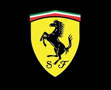

| Home | Models | Bookings | Racing | Products |
F E R R A R I

| Home | Models | Bookings | Racing | Products |

The story of Ferrari begins in the early 20th century with Enzo Ferrari, born in Modena, Italy, in 1898. Enzo’s passion for cars and racing was ignited at a young age. After serving as a driver for Alfa Romeo during the 1920s, he established Scuderia Ferrari in 1929, initially as a racing division for Alfa Romeo. This marked the beginning of a journey that would redefine the world of motorsport and luxury automobiles. In the early years, Scuderia Ferrari primarily focused on supporting amateur drivers. The team quickly gained a reputation for its engineering excellence and competitive spirit, achieving numerous victories in local and national races.